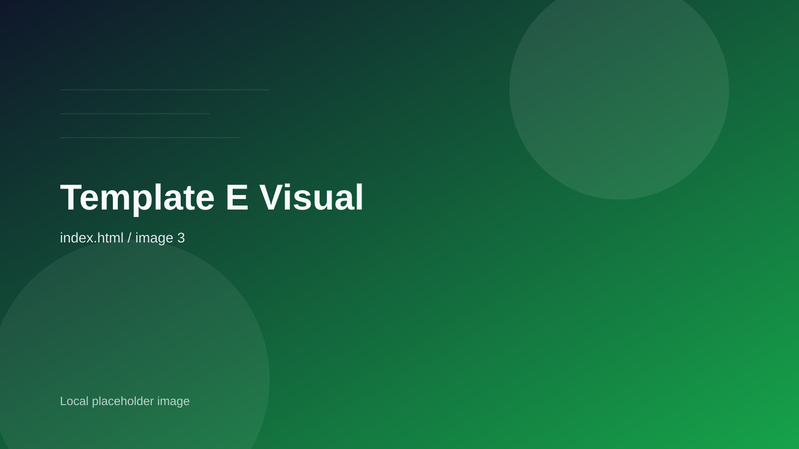

co2
脱炭素設計
商品設計から物流まで、 排出量の高い工程を 優先的に見直します。
再生型ブランド設計、 循環型サービス開発、 サステナブルな顧客体験まで。 Verdant Global は、 自然への敬意を 成長戦略へと変換します。
Impact Snapshot
年間 CO2 削減量
12.5k t
+18% YoY製造、物流、回収まで横断して算出した総削減量。
再生活動パートナー
85拠点
Regional Alliance
循環型商品の採用率
94%
Circular Adoption
環境配慮を 「理念」で終わらせず、 事業 KPI として 判断できる粒度まで整流します。
Impact Report
私たちは、 人の暮らしを豊かにしながら、 地球への負荷を減らす 仕組みづくりに取り組んでいます。
商品設計から物流まで、 排出量の高い工程を 優先的に見直します。
地域の生産者と連携し、 調達そのものが 自然再生につながる状態をつくります。
使い終わった後までを含めて、 顧客体験をデザインし直します。
Featured Solutions

原料調達の透明性と、 体験価値の両立をめざす ウェルネスブランド支援。
廃棄コストまで含めて最適化する、 循環型パッケージと運用設計。
住空間や販売導線を含めて、 暮らしの中で続くエコ体験を設計します。